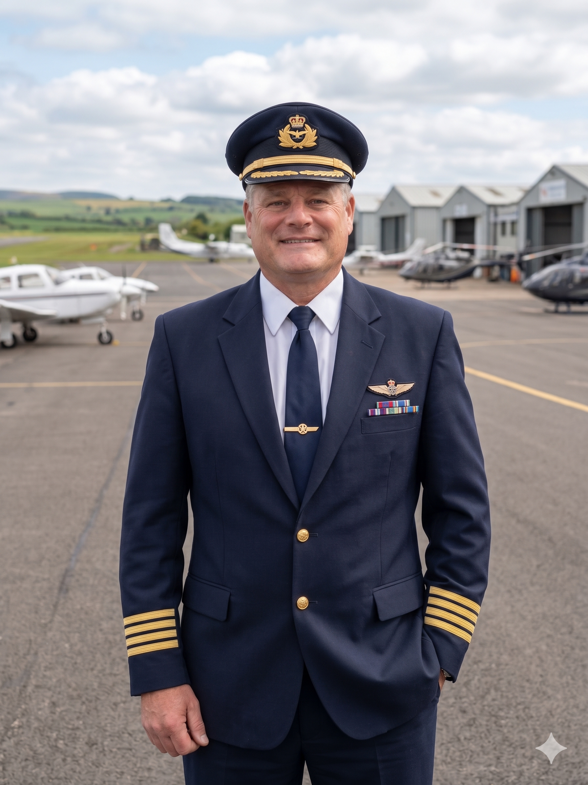
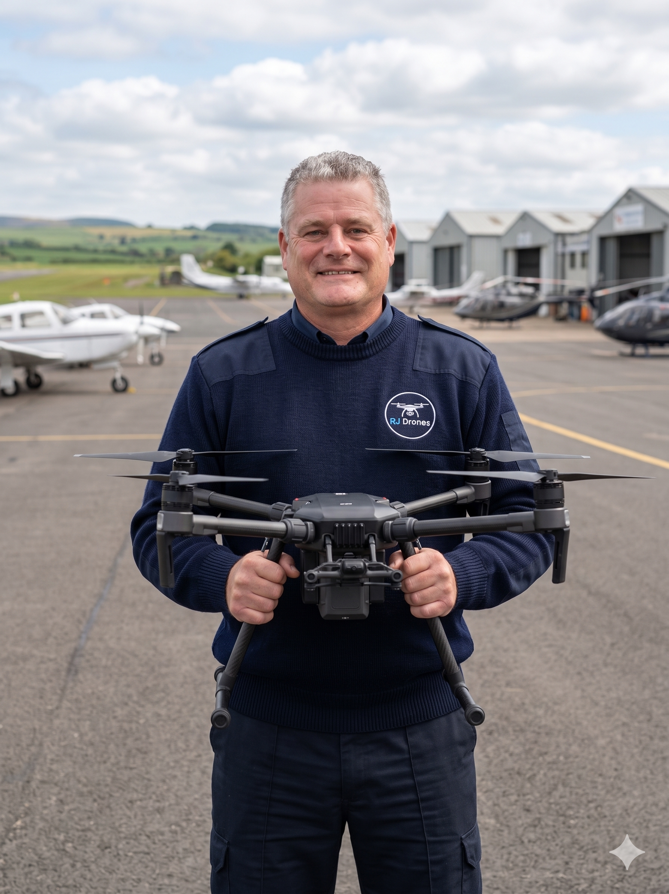

Cinema
DJI Inspire 3
Full-frame cinema platform. 8K ProRes RAW. Industry standard for high-end production.
Raymond James built his career in manned aviation. That same standard — checklists, contingency plans, predictable outcomes — defines every RJ Drones mission.

Raymond began flying in his early twenties, accruing thousands of hours in fixed-wing and rotary-wing aircraft across commercial and instructional roles. He carries an active FAA pilot certificate alongside his Part 107 remote pilot credential — a combination few drone operators can match.
When unmanned aerial systems matured into professional-grade tools, Raymond was an early adopter. He recognised the same airspace, the same physics, the same need for rigor — only now with the precision of automated waypoints and the patience of a hovering camera.
Today, RJ Drones serves cinematographers, surveyors, real-estate brokers, agricultural operators and infrastructure inspectors — each engagement scoped to outcome, not hours billed.

That same cockpit mindset — pre-flight checklists, contingency planning, weather judgement — now defines every RJ Drones mission. The DJI Matrice held here represents the fleet: enterprise-grade, sensor-flexible, and backed up on every job.
From a single real-estate shoot to a multi-day mapping campaign, clients receive the focus of a seasoned aviator who treats every flight — manned or unmanned — with the same professional standard.
Request a Quote →Active remote pilot certification. Current on biennial recurrency requirements.
Active manned aviation credential — fixed and rotary-wing experience.
General aviation policy with on-demand coverage scaling for larger productions.
Real-time airspace authorisation near 400+ controlled airports.
Authorised for civil twilight and night flights with appropriate lighting protocols.
Beyond-visual-line-of-sight operations on a per-mission waiver basis.
Aircraft are selected per mission objective — and a redundant backup is always on site.
Full-frame cinema platform. 8K ProRes RAW. Industry standard for high-end production.
Enterprise inspection platform with RTK, thermal payload and 200MP zoom capability.
Compact mapping aircraft. RTK-enabled, mechanical shutter, sub-2 cm accuracy.
Backup cinematic platform with 6K HDR and strong low-light performance.